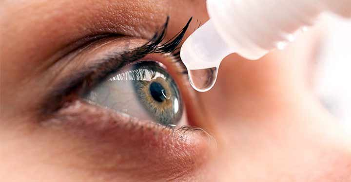

Evaluación de ojo seco

El ojo seco es una condición que ocurre cuando los ojos no producen suficientes lágrimas o estas no mantienen una lubricación adecuada. Puede causar molestias que afectan las actividades diarias.
Permite identificar posibles causas de las molestias y recibir recomendaciones o tratamiento de acuerdo con las necesidades de cada persona.